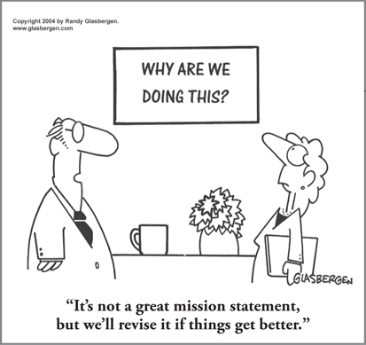

CHAPTER 15
Making Vision and Values Actionable: How to Align Any Business for Optimum Performance

CHAPTER HIGHLIGHTS
 Most organizations today have statements that articulate their vision, mission, and values as a way to create cohesion across the culture. Leaders need to be involved in the development of these statements to ensure buy-in and alignment with them.
Most organizations today have statements that articulate their vision, mission, and values as a way to create cohesion across the culture. Leaders need to be involved in the development of these statements to ensure buy-in and alignment with them.
 These statements, which often draw on different mental preferences, are typically developed separately from one another, exacerbating the potential for misalignment.
These statements, which often draw on different mental preferences, are typically developed separately from one another, exacerbating the potential for misalignment.
 The Whole Brain approach provides a method of diagnosing the mentality behind these statements and providing context so that everyone in the organization can better understand them and the behaviors that are required for alignment.
The Whole Brain approach provides a method of diagnosing the mentality behind these statements and providing context so that everyone in the organization can better understand them and the behaviors that are required for alignment.
 Once they have been fully analyzed through a Whole Brain diagnostic lens, the vision, mission, and values become much easier to understand, communicate, and make actionable.
Once they have been fully analyzed through a Whole Brain diagnostic lens, the vision, mission, and values become much easier to understand, communicate, and make actionable.
I was sitting in the waiting room, having been invited to present my Whole Brain Thinking approach to the board of a billion-dollar communications company that was interested in applying it. While waiting, I looked around the well-appointed room and noted a portrait of a distinguished-looking gentleman who was apparently the company’s founder. On either side were framed parchment documents describing the mission of the organization and its core values. The mission statement was a very impressive, well-crafted document, impeccably hand-lettered on fine-grain parchment and handsomely framed. I read each document carefully, as it gave me insight into the company’s culture. As was my habit at the time, I decrypted the language by diagnosing the mentality of certain words so that I could create a thinking preference “profile” of the documents—a way to get even greater clarity about the culture. We’ve since automated this process, and the resulting profile is called the HBDI Text Profile. The HBDI Text Profile of this company’s mission statement is shown on the left side of Figure 15-1.
FIGURE 15-1 The HBDI Text Profile of a communications company’s mission statement and corporate values.
I had just finished preparing this profile when a staff member let me know that it would be another 10 to 15 minutes before I could come into the board-room, so I decided to do an HBDI Text Profile of the company’s corporate values statement, the similarly framed document on the other side of the founder’s picture. I diagnosed each word in terms of its preference characteristics and aggregated the individual elements into an overall profile (see the profile on the right in Figure 15-1).
I was then invited into the boardroom and offered a seat next to the president. After a brief introduction, I was given 45 minutes to present my material, during which time there were numerous questions and nonverbal reactions to what I was saying. This segment was followed by an open discussion of the possibilities for applying my work within this organization.
At the end of the allotted time, the president said, “Ned, I would like to give you a parting gift. Here is a card containing the mission and corporate value statements upon which our business is based. This card is carried by thousands of our employees, who are proud to work for this great company.”
I accepted the card and noticed that it contained the two statements I had just diagnosed before entering the meeting. When I got back to the hotel, I took half an hour to document my experience in the boardroom, including capturing a generous sampling of statements that I could quote verbatim. Seeing the possibility of a small case history, I then developed an HBDI Text Profile of my experience with the board. Figure 15-2 shows all three profiles plotted together.
FIGURE 15-2 Composite HBDI Text Profiles of mission, values, and management culture.
My wife, Margy, who always accompanied me on these trips, expressed an interest in a Japanese dinner that night, so we found a nearby restaurant that featured open seating around individual grills. We were seated next to a young couple, and the four of us were the only patrons at that particular grill, so we had a chance to talk. When I asked them what they did and where they worked, they told me that they were both professional employees working for the company that I had just visited. It didn’t take much probing for them to reveal their lack of satisfaction with their work for that company. In their own words, they described a pious, crass, self-serving management that did not live up to its stated objectives. When I took the president’s plastic card out of my pocket, they burst into laughter. After a minute, they said that not only did they not carry those cards in their wallets, but they had trashed them as soon as they discovered that the company was not living up to the values as they were stated. They added that they were both actively looking for a better place to work and would leave in a heartbeat if the opportunity presented itself.
I seldom have the opportunity to so quickly verify the consequences of a gross misalignment like the one these HBDI Text Profiles revealed. If the leaders are to have credibility, the words describing key leadership issues must be matched by the leaders’ behavior. No matter who puts the words together, it is the responsibility of the leaders to make certain that the intent of those words is translated into leadership action. Prior to having a text profiler based on Whole Brain Thinking, there was no easy way to diagnose these kinds of leadership statements, and therefore they have been promulgated without regard for the leadership mentality that they reveal and the consequences of their misalignment with management behavior. Now that there is a way to diagnose the mentality of these statements, making certain that they are strongly aligned should be a New Year’s resolution of leadership teams—unless of course, they don’t give a damn about their credibility.
The vision statement, mission statement, core values, and annual report are among the key documented materials that come out of the leadership team. As they establish the purpose and direction of the business, these documents represent the thinking of the leadership.
In most cases, however, they are developed by committees, separately and at different times during the team’s tenure. Therefore, they reflect thinking that may be appropriate to different people, situations, and time frames. Even when they are written by the same group at the same time, they are often different! In any case, I believe the business leaders must ensure that these written statements are consistent, and that, taken together, they document the purpose and direction of the business on an everyday basis in such a way that the leaders’ behaviors exemplify them. We can’t have this year’s vision and last year’s values if they no longer apply. We shouldn’t have an annual report that conveys a different message from the current mission statement on which daily decisions are being based.
The Whole Brain approach provides a consistent method for diagnosing the mentality of each of these documents or statements, allowing for a clear comparative analysis. For example, Figure 15-3 shows an array of what I refer to as the key leadership issues of a large U.S. corporation.
FIGURE 15-3 Key leadership HBDI Text Profiles for a U.S. corporation. Pro-forma profiles of key leadership issues.
These HBDI pro-forma profiles were developed by creating an HBDI Text Profile of each descriptive word, sentence, paragraph, or page of a particular document. Also included in the analysis were any charts, graphs, financial data, or illustrations. For example, a page of financial data would be diagnosed as an exclusively A-quadrant element of the complete document. An illustration of a family enjoying a picnic, in which the company’s products were displayed, would be considered primarily a C-quadrant element, with perhaps a D-quadrant contribution if the products were being newly introduced. In contrast, a page devoted to the manufacturing assembly line operation and its production results would contribute a strong B-quadrant element to the overall diagnosis. In this way, the thinking preference characteristics of the statements and documents are diagnosed and aggregated into an overall profile of that key leadership issue.
Even to the untutored eye, it is clear that the key leadership issues as depicted by the profiles shown in Figure 15-3 are reasonably consistent in the rational and analytic A quadrant, less consistent in the organized, structured B quadrant, and even less consistent in the conceptual, visionary D quadrant. They are flagrantly inconsistent in the humanistic, interpersonal C quadrant. This lack of alignment lessens the credibility of the leaders unless they can model what is being expressed. In this case the profiles validated a situation in which management was proclaiming values that were not actually being carried out. It described things to the investing public that were not experienced by the customers and employees, and the good intentions embedded in the vision statement were more of a pipe dream than a reality.
I find it extremely revealing that, in the vast majority of cases, it is the C or D quadrant that is consistently out of alignment with actual behaviors. This is where the rubber tire of leadership credibility meets the hard pavement of employee reality. The documents and statements that leaders create invite people to compare their intentions with their performance, and there are consequences when the described behaviors aren’t in sync with reality.
Digging into the Challenge of Alignment
So what’s going on in these organizations? Why is this such a common phenomenon among leaders, even in companies with strong roots in visionary, inclusive leadership? I believe there are several reasons. We can learn a lot by looking at what happens with vision as companies grow.
Growing Companies: The Classic Struggle Between Short- and Long-Term Leadership Thinking
It’s instructive to realize that many companies, even those with a long-term vision and a solid business plan, fail to survive infancy. The actuarial statistics are ominous. For every 100 new businesses, fewer than 50 survive the first five years, and fewer than 33 survive the first decade.1
Very early in the life cycle of any new business, it becomes apparent that too much attention is being paid to the future dream and not enough to the realization that you have to deliver the product or service and invoice it in order to generate cash, and cash is always in critically short supply. If there is a D-quadrant dreamer involved in this infant stage, the wake-up call comes early, even if it’s filtered out.
Whatever action the company takes, it must happen, and it must happen fast. Entrepreneurial thinking must be curbed in favor of operational action. Long-term vision must take a back seat to immediate implementation of short-term plans.
It doesn’t take long to discover who is needed to build the product, deliver it, render service, and collect for it—in general, the employees and teams that can produce short-term results. Those who cannot contribute to this process are often reassigned or laid off. Since what little capital was raised to start the business has often already been consumed, the critical issue now is cash flow. Survival depends on cash generation, and an accelerated planning cycle, if there is one, is in terms of weeks and months rather than years.
Under these conditions, while the organization’s vision needs to be clearly established to keep the organization on track, the leadership mentality must shift to be much more strongly oriented toward the A/B quadrants: infrastructure, processes, results, and execution. It’s a ten-hours-a-day, six-days-a-week focus on short-term results. The people in charge can’t be bothered with anything that does not produce immediate results, and when those results happen and people are recalled or newly hired to deliver the product or service or help run the business, the leaders in charge must reorient them to the short-term business plan in the context of the long-term vision—because that’s what’s producing results. While the focus is heavily weighted toward the A and B quadrants, it’s often the initial vision and passion of the C and D quadrants that will have helped attract talent, show devotion to customers, and provide the energy required for the culture to sustain these efforts.
Those businesses that survive infancy and move into the adolescent stage tend to perpetuate the leadership that has helped them survive. As a result, unless they work hard to keep the C-oriented cultural appeal to attract and retain talent, and provide the right service to their customers and the D-directed ongoing innovation and clarity of vision alive—as many companies in Silicon Valley do today—the typical established management culture will now have a solid A-quadrant/B-quadrant tilt in its DNA. These leadership genetics are pretty well established by this time, and as incremental success is achieved, the mode of leadership is cloned. If the long-term vision was put on hold to manage short-term needs, it may have been forgotten by this point or it may simply be paid lip service, leading to misaligned messages both internally and externally.
As the company moves through adolescence and begins to mature, it’s often relatively easy for outside observers to notice that the company is beginning to run out of steam, even though insiders may not see it. The warning signs that this is happening can usually be found in a variety of areas: no new products are being developed, services are becoming obsolete, credibility within the marketplace is dwindling, competitors are now delivering better stuff at lower prices, and missed opportunities abound. The sad truth is that the short-term mentality that avoided early death set the pattern for death to occur in late adolescence.
To be in the 33 percent of companies that survive the first 10 years, the leadership must move from being focused on survival to being balanced and whole-brained: honoring the technical and financial aspects; the processes, execution, and quality; the devotion to talent and customers; and the ongoing innovation, vision, and strategy. Just having the right direction of leadership mentality is not enough—you need the competencies that go along with a more opportunistic, whole-brained leadership to move the organization to the next level.
This is often challenging at the individual leader level as well, not just a problem with the management culture. The path to leadership is a progression built on proven ability and success in roles that have often been more tactical and functional. That’s what you have been measured against up until this point. Suddenly, as you progress up to new leadership levels, a mind shift is required, one that necessitates moving away from a primary focus on A- and B-quadrant thinking to building up the interpersonal C- and strategic D-quadrant thinking styles. (For more specific insights on what is required at each level, see “Growing into Whole Brain Leadership” in Chapter 14.) The bottom line: the company can’t make the shift if its leaders don’t.
This level of leadership includes having an updated vision of the company that will take it to its next phase of maturity: a long-range strategic business plan that is focused on providing the human resource assets capable of innovative new product development, financial and funding know-how, technology and IT, marketing and sales savvy, and the risk taking needed to grow. The pendulum that swung from the founding dream to the hard-nosed survivor must now swing back to a multidominant center position that can conceive and deliver mature business results.
The more A/B-quadrant leadership DNA will treat the swing to the right as a virus, and the organization’s immune system will try to throw it off because it feels like a threat and appears too risky. Early diagnosis of this illness is very elusive. The first medication is instant rationalization. The thinking trap is believing, “The leadership style that took us through infancy and near bankruptcy to today’s success is good enough to now take us to our corporate destiny. Why take unnecessary risks?”
Shifting the mentality of previously successful leadership to what is required for future growth is extremely difficult. If the company wants to be among the businesses that achieve “prime,” then it must find leaders who can accomplish the mental shift to situational wholeness, either from the inside or from without. The entrepreneurial founder who stepped aside for survival may return at this point, if a balanced team and the right conditions are in place—as Steve Jobs did at Apple in 1997 after having been fired by the board in 1985. Having evolved as a leader, he brought on Tim Cook in 1998 to provide the necessary balance required to take Apple to the next level.
Ultimately, for a company to achieve optimal long-term business results, it must have situational Whole Brain leadership. This is not a theory. This is hard reality.
Enterprise Alignment: It Starts with the Individual
From smaller growing companies to huge, established corporations, the concept of thinking preferences and Whole Brain leadership clarifies a wide array of alignment issues. Alignment starts at the individual level. Whether it’s the alignment of our mental preferences and our educational choices, the alignment of how we prefer to think and our occupational choices, or the alignment of those things that we are most energized by and our actual work assignment, I believe that most of the business world is out of alignment rather than in alignment. Too often, it is relatively rare for people to be truly aligned with the activity they are involved with, whether it is going to school, pursuing a career, or performing a job.
As I explored in Chapter 10, I anticipate that Maslow’s notion of self-actualization3 would occur more frequently if there were a strong alignment between how we think and what we are doing, and that if this were the case, the level of effort required to engage in that activity would be more relaxed, free-flowing, and therefore more efficient in the use of our mental faculties. When we are too far out of alignment, we have to struggle to perform, because what we are doing is not really what we are interested in doing.
In today’s competitive talent market, alignment is the path to competitive advantage. Just imagine what it would be like if your organization had made a concerted effort to understand the mental preferences of its people, to diagnose and understand the mental requirements of the work to be done, and then to sort out the work and divide it up into packages of activities that could be matched as closely as possible to the mental preferences of the people in the organization—with growth and learning support provided for those areas that were not aligned. This would create individual alignment between people and their work not only at the micro level, but also at the macro level, leading to alignment across the organization. Can you imagine what a positive impact that would make on your productivity and the performance of the organization? Wouldn’t that be an organization that you and others would want to work for?
I see an opportunity for each individual, from leaders to the front lines, as well as the whole enterprise, to seek alignment of the various segments of personal and business life by making adjustments, not only in the mental approach we take to those elements, but also in those elements themselves. Success, satisfaction, fulfillment, and the simple pleasure of our daily existence can improve when personal alignment is achieved. And once individual misalignment has been addressed, enterprise alignment must be tackled. Such clarity of understanding across the enterprise can only serve to improve business results, as more engaged employees better satisfy customers and ultimately drive shareholder value.
Sound too good to be true? Our experience has demonstrated that those organizations that proactively address these inevitable alignment issues improve engagement, better understand and connect with customers, unleash innovative thinking at all levels, and consistently win the war for talent. They build a culture in which the leadership “walks the talk” and people feel valued because leaders understand how to best leverage the thinking that is available to them—the only path to business results. This is no longer a “nice to have,” but rather a must-do for any business to compete successfully and thrive in today’s environment. So where do you start?
The Key Roles of the CEO and the Leadership Team: Diagnose and Take Action
Let’s go back to that billion-dollar communications company, with its carefully crafted mission and values statements that no one believed the leaders were truly embodying. The most effective approach to the enterprise alignment issue is to develop a vision, a mission, a set of goals and objectives, and a definition of the organization’s values, then compare the alignment between the mentalities of those issues, the alignment between them and the leadership action, and the total array considered from the standpoint of the organization as a whole. Experience tells us that it would be rare indeed for all these significant business issues to be in alignment without conscious preparation. Once their degree of alignment is determined through the visualization of an HBDI pro-forma and Text Profiles, however, it becomes much easier to recognize, communicate, explain, and address the gaps.
In my experience, it is likely that different functions of the business within a given organization will be at different levels or degrees of alignment. For example, the engineering function may be in stronger alignment than the manufacturing function, and the marketing and sales organization at a different level of alignment from engineering and manufacturing. Under these conditions, it is less likely that the integrated business can be successful. To overcome this, the leaders of those functions need to work closely with the CEO to understand these issues and the roles they play in causing cross-enterprise misalignment, irrespective of people’s natural preferences.
Thus, one of the roles of the CEO and key leaders is to do their own internal alignment work, understanding how they think so that they can function as an aligned “first team,” loyal to the needs of the team they report to and honoring the needs of the enterprise more than the needs of the individual function they lead. The next step is to diagnose the cross-enterprise alignment issues and put together a plan to do something about them. There are, of course, two sides of the equation: the vision, mission, values, and goals of the organization, on the one hand, and the orientation of the culture and the human assets, on the other. The top leaders need to be crystal clear about what they want and be prepared to address and align both. They can change the vision, change the mission, or change the objectives of the organization (values are rarely changed, however) to better meet the reality of its culture and its human assets. Leaders can also change the nature, the mix, the capability of the human assets, and the culture to better meet the vision, objectives, and goals of the organization. One of the significant ingredients of the decision process is the ability to diagnose, to measure, to understand, and to easily compare.
Here is how this works: once the leadership team fully understands the dynamics of its thinking, its process flow, and its internal alignment issues using a tool like the HBDI Team Profile, it can then explore and quantify the aggregate brainpower, in terms of the HBDI averages, of each function of the organization. Next, by developing HBDI Text Profiles of the key leadership issues, such as the vision, values, mission, goals, and objectives, the leadership team begins to understand the relationship between those issues and aspirations and how the organization as a whole and its functions are or are not aligned. Finally, adjustments may need to be made and plans designed to address the gaps. This may include coaching or specific development for key leaders who are “not there yet.” For many businesses, the availability of this tool represents the first time the CEO and the leadership team have had a way of assessing the degree of alignment between these major aspects of the business. One CEO we work with pulls this data up every time his team members get together to address critical leadership issues so that they never lose sight of how important alignment is to their ability to lead the enterprise effectively.
 When an organization’s key leadership issues, statements, and documents are in alignment, the message becomes clearer, the leadership’s credibility improves, and employee engagement and retention increase.
When an organization’s key leadership issues, statements, and documents are in alignment, the message becomes clearer, the leadership’s credibility improves, and employee engagement and retention increase.
 Shifting from a short-term focus to situational Whole Brain leadership is essential for long-term organizational growth and survival.
Shifting from a short-term focus to situational Whole Brain leadership is essential for long-term organizational growth and survival.
 Individual alignment and enterprise-level alignment are both critical to business success.
Individual alignment and enterprise-level alignment are both critical to business success.
 Using the Whole Brain approach allows leaders to diagnose and bring into alignment the mentality of key leadership documents, behaviors, and the culture for improved cohesion and success.
Using the Whole Brain approach allows leaders to diagnose and bring into alignment the mentality of key leadership documents, behaviors, and the culture for improved cohesion and success.
 The CEO and the top leadership team can get started by first diagnosing and addressing their alignment as a team and then tackling alignment between functions and across the enterprise.
The CEO and the top leadership team can get started by first diagnosing and addressing their alignment as a team and then tackling alignment between functions and across the enterprise.